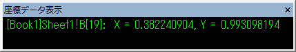
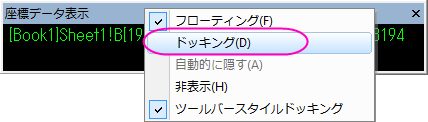

｢座標データ表示｣ツール
- 
「座標データ表示」ツールは、データポイントあるいはカーソルの画面上の位置のXY座標をダイナミックに表示します。「プロット操作･オブジェクト作成」ツールバーから以下のツールを選択したときに「データ表示」ツールが開きます。
「データ表示」ツールのサイズ変更
ウィンドウの角をドラッグして、「データ表示」ツールを拡大、縮小することができます。「座標データ表示」ツールはフローティングツールですから、Originワークスペース内でどこにでも移動することができます。
「座標データ表示」ツールのドッキングと解除
- 「座標データ表示」ツールのドッキングを解除するには、ツールバーの部分をドラッグするかツールの表示部分をダブルクリックします。
- データ表示ツールのタイトルーバーをダブルクリックすることにより、ツールは同じツールバー領域にドックされます。
- ツールがドッキングしていないときに、ツールタイトルバーを右クリックし、ショートカットメニューからドッキングをクリックするとドッキングします。
- 
「座標データ表示」ツールから利用可能なショートカットメニュー
ツールのタイトルバーを右クリックすると利用可能なショートカットメニューコマンド
- フローティング：Originのワークスペース内でフローティングします。
- ドッキング： ツールバーエリアにドッキングします。
- 自動的に隠す：ドッキングしていますが、マウスカーソルが離れた時に自動的に隠します。
- 非表示: ツールを非表示にします。
- ツールバースタイルドッキング:このチェックを外すと、位置矢印が表示される箇所に垂直に表示されます。
ツール内側を右クリックして利用可能なショートカットメニューコマンド
- フォントサイズを固定する*:このメニューコマンドを選択すると、ツール内のテキストのサイズが現在の大きさに固定されます。ツールの水平及び垂直方向のサイズ変更はテキストの大きさには影響を与えません。
- 水平方向にフィット*：このショートカットメニューコマンドによりツール内のテキストは常にツールの横幅いっぱいに表示されます。ツールの水平方向のサイズ変更を行うと、テキストの大きさもそれに従い変化します。ツールの垂直方向のサイズ変更はテキスト表示には影響しません。
- 垂直方向にフィット*:このショートカットメニューコマンドによりツール内のテキストは常にツールの縦幅いっぱいに表示されます。ツールの縦方向のサイズ変更を行うと、テキストの大きさもそれに従い変化します。ツールの水平方向のサイズ変更はテキスト表示には影響しません。
- ドック可:｢座標データ表示｣ツールをドック可能に設定します。もし、このショートカットメニューにチェックがついていないと、自動的にツールバースペーサにドックします。ドックされたツールをその後浮動状態にする場合、ツール内でダブルクリックします。または、ツールをワークスペース内にドラッグします。
- 座標データの表示属性： ｢座標データ表示制御｣ダイアログボックスを開きます。
|
* このショートカットメニューコマンドは、｢座標データ表示制御｣ダイアログボックスの『自動的にフィットさせて表示』のチェックボックスがチェックされていない時に限り有効です。
|
｢座標データ表示｣ツールの表示方法のカスタマイズ
フォント、フォントの色、ツールの背景色など｢座標データ表示｣ツールの表示を変更するには、ツールの中で右クリックし、ショートカットメニューから｢座標データの表示属性｣を選びます。このショートカットメニューのコマンドにより「データ表示形式」ダイアログボックスが開かれます。
- フォント：このドロップダウンリストから、希望のテキストの表示フォントを選択して下さい。
- 最小フォントサイズ:「座標データ表示ツール」で表示する最小フォントサイズを指定します。
- フォントの色:このドロップダウンリストから、希望のテキストの表示色を選択して下さい。
- 背景の色：このドロップダウンリストから、希望の背景の表示色を選択して下さい。
- 自動的にフィットさせて表示する：このチェックボックスを選択すると、｢座標データ表示｣ツールがサイズ変更された時にツール内のテキストも、常にその表示ウィンドウに合わせてフォントの大きさが変わります。この場合、｢フォントサイズを固定する｣、｢水平方向にフィット｣、および｢垂直方向にフィット｣の3つのショートカットメニューは、グレーアウトしており、利用不可になっています。このチェックボックスのチェックを外すと、｢フォントサイズを固定する｣、｢水平方向にフィット｣、および｢垂直方向にフィット｣の3つのショートカットメニューが利用可能になります。希望のコマンドを選択してツール内でのテキスト表示をコントロールします。